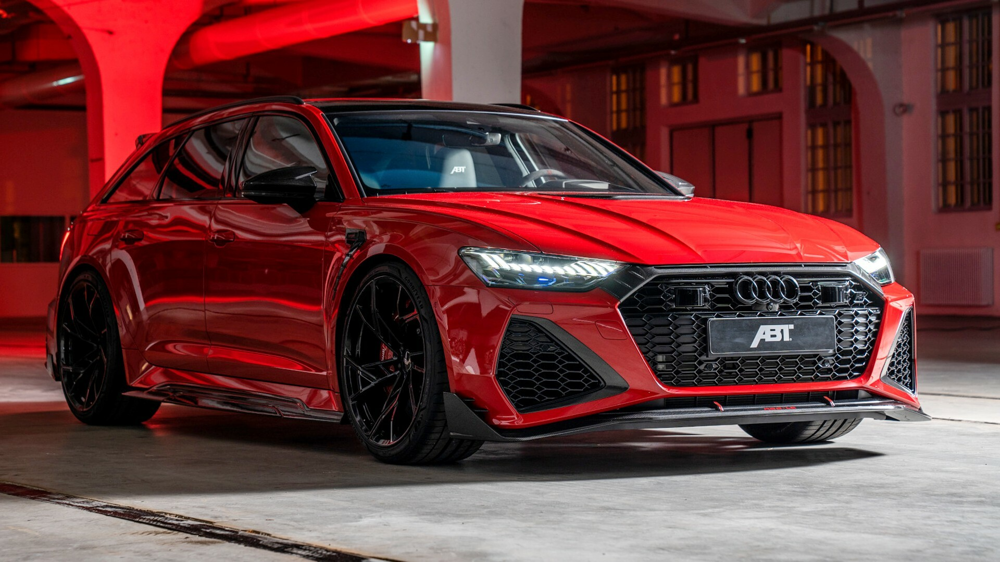
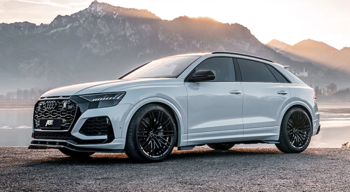

Audi/Ауди
Модели:
- 1921 г. –
Audi Typ K е първият немски сериен автомобил с ляв волан
- 1975 г. –
двигател с механично впръскване на бензин, използван за
първи път в Audi 80 GT/E, предшественик на GTI двигателя
на Volkswagon Golf
- 1977 г. –
петцилиндров бензинов двигател
с вътрешно горене, серийно вграждан в Audi 100 С2
- 1980 г. –
системата quattro
- 1983 г. –
първи немски автомобилен производител с разрешение за
производство на коли с катализатор
- 1986 г. –
всички коли на Audi са напълно поцинковани
(галванизирани) и с 6 години гаранция против
корозия (в днешни дни – 12 години)
- 1986 г. –
procon-ten е алтернатива на еърбеговете
и представлява система от стоманени въжета,
свързващи кормилото и колана с моторния блок. При челен
удар въжетата издърпват волана напред към двигателя, а
колана – към седалката и по този начин се предотвратява
съприкосновение на главата с кормилото.
- 1988 г. –
Audi V8 е първата лимузина от горен клас в серийно
производство с постоянно задвижване 4х4.
- 1989 г. –
представен е първият TDI двигател,
широко използвана днес технология, за първи път приложена
в Audi 100 С3 с 5-цилиндров, 2,5-литров TDI
- 1994 г. –
разработена е технологията Audi Space Frame (напълно
алуминиево купе), което, освен че олекотява автомобила,
повишава сигурността на пътниците в случай на катастрофа;
за първи път е използвано в Audi А8
- 1999 г. –
Multitronic, безстепенна скоростна кутия, за първи път
използвана в Audi A6 (4B)
- 2001 г. –
Audi А2 1.2 TDI е първият „трицилиндров“ автомобил с пет
врати
- 2001 г. –
двигател FSI (впръскване под
налягане при бензиновите двигатели), технология,
заимствана от състезателния модел R8
 German Cars